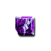
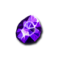
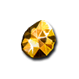
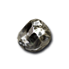

What it does
Socket gems in weapons, helms, body armor or shields. The bonus depends on the gem, grade and slot. Cube three identical gems into one of the next grade. Gems are unchanged from Diablo II.
| Kind | In a weapon | In a helm or armor | In a shield | |||||
|---|---|---|---|---|---|---|---|---|
| Amethyst |  |  |  |  | +40 to Attack Rating+60 to Attack Rating+80 to Attack Rating+100 to Attack Rating+150 to Attack Rating | +3 to Strength+4 to Strength+6 to Strength+8 to Strength+10 to Strength | +8 Defense+12 Defense+18 Defense+24 Defense+30 Defense | |
| weapon +40 to Attack Rating+60 to Attack Rating+80 to Attack Rating+100 to Attack Rating+150 to Attack Rating · helm or armor +3 to Strength+4 to Strength+6 to Strength+8 to Strength+10 to Strength · shield +8 Defense+12 Defense+18 Defense+24 Defense+30 Defense | ||||||||
| Topaz |  |  |  | Adds 1-8 lightning damageAdds 1-14 lightning damageAdds 1-22 lightning damageAdds 1-30 lightning damageAdds 1-40 lightning damage | 9% Better Chance of Getting Magic Items13% Better Chance of Getting Magic Items16% Better Chance of Getting Magic Items20% Better Chance of Getting Magic Items24% Better Chance of Getting Magic Items | Lightning Resist +12%Lightning Resist +16%Lightning Resist +22%Lightning Resist +28%Lightning Resist +40% | ||
| weapon Adds 1-8 lightning damageAdds 1-14 lightning damageAdds 1-22 lightning damageAdds 1-30 lightning damageAdds 1-40 lightning damage · helm or armor 9% Better Chance of Getting Magic Items13% Better Chance of Getting Magic Items16% Better Chance of Getting Magic Items20% Better Chance of Getting Magic Items24% Better Chance of Getting Magic Items · shield Lightning Resist +12%Lightning Resist +16%Lightning Resist +22%Lightning Resist +28%Lightning Resist +40% | ||||||||
| Sapphire |  |  | Adds 1-3 cold damageAdds 3-5 cold damageAdds 4-7 cold damageAdds 6-10 cold damageAdds 10-14 cold damage | +10 to Mana+17 to Mana+24 to Mana+31 to Mana+38 to Mana | Cold Resist +12%Cold Resist +16%Cold Resist +22%Cold Resist +28%Cold Resist +40% | |||
| weapon Adds 1-3 cold damageAdds 3-5 cold damageAdds 4-7 cold damageAdds 6-10 cold damageAdds 10-14 cold damage · helm or armor +10 to Mana+17 to Mana+24 to Mana+31 to Mana+38 to Mana · shield Cold Resist +12%Cold Resist +16%Cold Resist +22%Cold Resist +28%Cold Resist +40% | ||||||||
| Emerald |  |  | +10 poison damage over 3 seconds+20 poison damage over 4 seconds+40 poison damage over 5 seconds+60 poison damage over 6 seconds+100 poison damage over 7 seconds | +3 to Dexterity+4 to Dexterity+6 to Dexterity+8 to Dexterity+10 to Dexterity | Poison Resist +12%Poison Resist +16%Poison Resist +22%Poison Resist +28%Poison Resist +40% | |||
| weapon +10 poison damage over 3 seconds+20 poison damage over 4 seconds+40 poison damage over 5 seconds+60 poison damage over 6 seconds+100 poison damage over 7 seconds · helm or armor +3 to Dexterity+4 to Dexterity+6 to Dexterity+8 to Dexterity+10 to Dexterity · shield Poison Resist +12%Poison Resist +16%Poison Resist +22%Poison Resist +28%Poison Resist +40% | ||||||||
| Ruby |  |  | Adds 3-4 fire damageAdds 5-8 fire damageAdds 8-12 fire damageAdds 10-16 fire damageAdds 15-20 fire damage | +10 to Life+17 to Life+24 to Life+31 to Life+38 to Life | Fire Resist +12%Fire Resist +16%Fire Resist +22%Fire Resist +28%Fire Resist +40% | |||
| weapon Adds 3-4 fire damageAdds 5-8 fire damageAdds 8-12 fire damageAdds 10-16 fire damageAdds 15-20 fire damage · helm or armor +10 to Life+17 to Life+24 to Life+31 to Life+38 to Life · shield Fire Resist +12%Fire Resist +16%Fire Resist +22%Fire Resist +28%Fire Resist +40% | ||||||||
| Diamond |  |  |  | +28% Damage to Undead+34% Damage to Undead+44% Damage to Undead+54% Damage to Undead+68% Damage to Undead | +20 to Attack Rating+40 to Attack Rating+60 to Attack Rating+80 to Attack Rating+100 to Attack Rating | All Resistances +6All Resistances +8All Resistances +11All Resistances +14All Resistances +19 | ||
| weapon +28% Damage to Undead+34% Damage to Undead+44% Damage to Undead+54% Damage to Undead+68% Damage to Undead · helm or armor +20 to Attack Rating+40 to Attack Rating+60 to Attack Rating+80 to Attack Rating+100 to Attack Rating · shield All Resistances +6All Resistances +8All Resistances +11All Resistances +14All Resistances +19 | ||||||||
| Skull |  |  | 1% Mana stolen per hit 2% Life stolen per hit2% Mana stolen per hit 2% Life stolen per hit2% Mana stolen per hit 3% Life stolen per hit3% Mana stolen per hit 3% Life stolen per hit3% Mana stolen per hit 4% Life stolen per hit | Replenish Life +2 Regenerate Mana 8%Replenish Life +3 Regenerate Mana 8%Replenish Life +3 Regenerate Mana 12%Replenish Life +4 Regenerate Mana 12%Replenish Life +5 Regenerate Mana 19% | Attacker Takes Damage of 4Attacker Takes Damage of 8Attacker Takes Damage of 12Attacker Takes Damage of 16Attacker Takes Damage of 20 | |||
| weapon 1% Mana stolen per hit 2% Life stolen per hit2% Mana stolen per hit 2% Life stolen per hit2% Mana stolen per hit 3% Life stolen per hit3% Mana stolen per hit 3% Life stolen per hit3% Mana stolen per hit 4% Life stolen per hit · helm or armor Replenish Life +2 Regenerate Mana 8%Replenish Life +3 Regenerate Mana 8%Replenish Life +3 Regenerate Mana 12%Replenish Life +4 Regenerate Mana 12%Replenish Life +5 Regenerate Mana 19% · shield Attacker Takes Damage of 4Attacker Takes Damage of 8Attacker Takes Damage of 12Attacker Takes Damage of 16Attacker Takes Damage of 20 | ||||||||
Where they drop
Each gem’s item page lists monster sources and numeric odds by difficulty. The stash's Stones tab keeps a slot for every gem, stacked with a count.